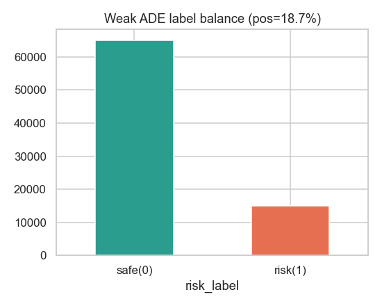
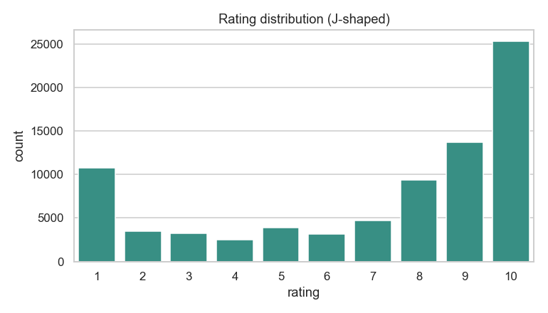
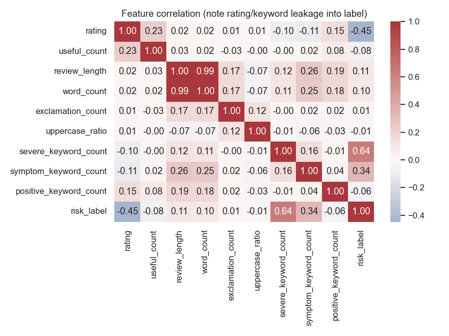
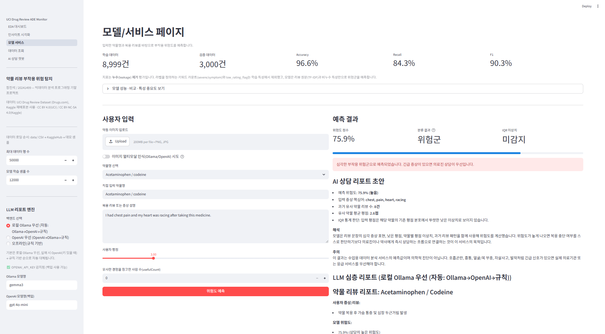

condition 1,171행 HTML 잔여물 → 전처리 필요SertralineSevere chest pain and my heart was racing, I could not breathe.2

| 모델 | F1 | AUC |
|---|---|---|
| RandomForest (배포) | 90.2% | 0.983 |
| HistGradientBoosting | 97.4% | 0.988 |
| 단순규칙 (rating≤3) | 61.9% | — |
src/를 공유하는 단일 진실 원천 구조.